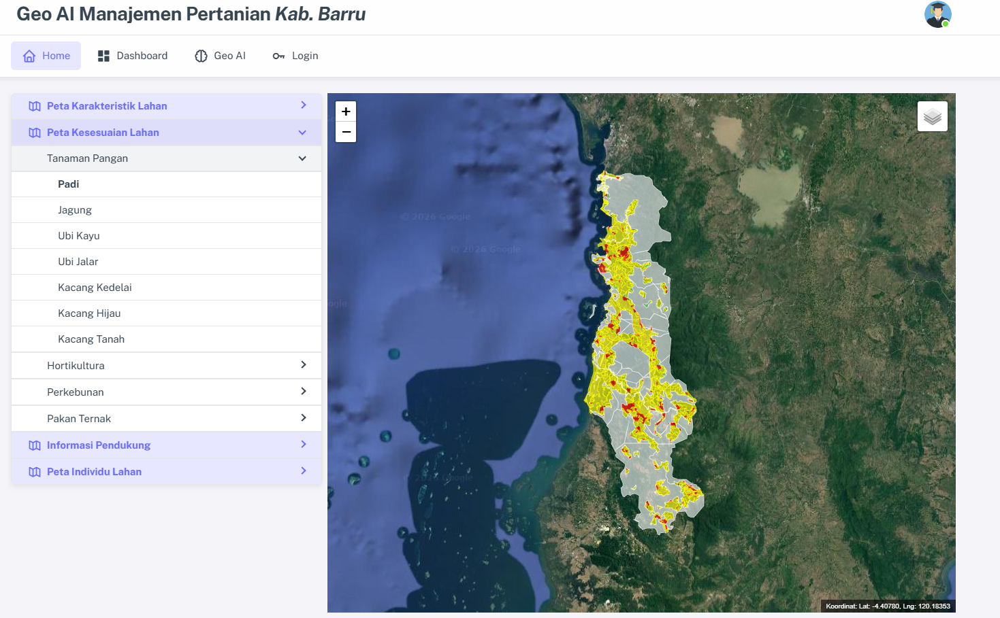
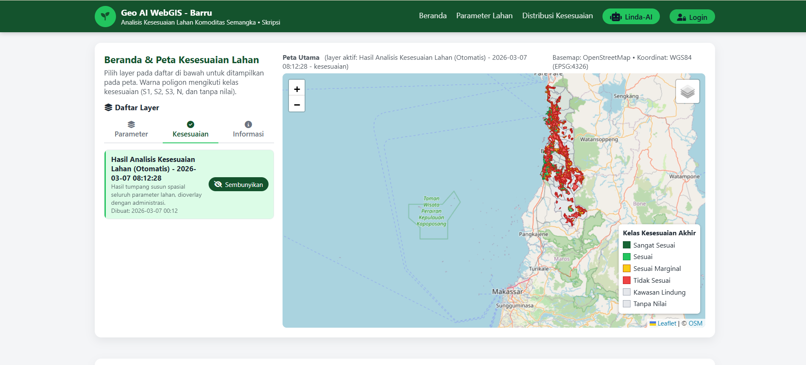

Saya seorang mahasiswa S1 Geofisika dengan minat kuat di bidang Geoinformatika, pengembangan WebGIS, dan integrasi Artificial Intelligence. Saya berdedikasi membangun solusi data spasial yang efisien.
Saya memiliki pengalaman dalam merancang dan mengembangkan platform WebGIS yang dilengkapi chatbot berbasis AI untuk berbagai kebutuhan. Saya mahir menggunakan teknologi GIS modern untuk pemrosesan dan presentasi data spasial. Sebagai mahasiswa Geofisika (S.Si) di Universitas Hasanuddin (lulus 2026), komitmen saya adalah terus mengembangkan solusi inovatif yang menggabungkan GIS dan Kecerdasan Buatan.
• Mengembangkan platform WebGIS: GeoAI Barru, Geopangansidrap, dan Sijagung.
• Menerapkan fitur chatbot AI via n8n dan Supabase untuk interaktivitas pengguna.
• Manajemen data spasial dengan PostgreSQL/PostGIS dan MySQL.
• Meningkatkan UI/UX aplikasi GIS menggunakan Leaflet dan Folium.
• Membuat peta distribusi spasial Saluran Udara Tegangan Tinggi (SUTT) di Kota Makassar.
• Membuat peta kerentanan tanah longsor untuk tiap lokasi SUTT.
• Melakukan survei lapangan untuk memetakan kelompok tani (POKTAN) menggunakan teknik pengumpulan data geospasial.
• Mengumpulkan dan memvalidasi data spasial dan atribut untuk setiap wilayah.

Platform geospasial yang dilengkapi dengan lapisan analisis AI dan elemen peta interaktif.
Live DemoAplikasi manajemen bengkel dengan peran Admin/Mekanik, sistem kasir (POS), dan manajemen inventaris.
Integrasi API Groq, n8n, dan Supabase vector database untuk kueri data spasial yang cerdas.

Sistem Informasi Geografis berbasis web untuk pemetaan dan analisis wilayah Kabupaten Barru.
Live Demo